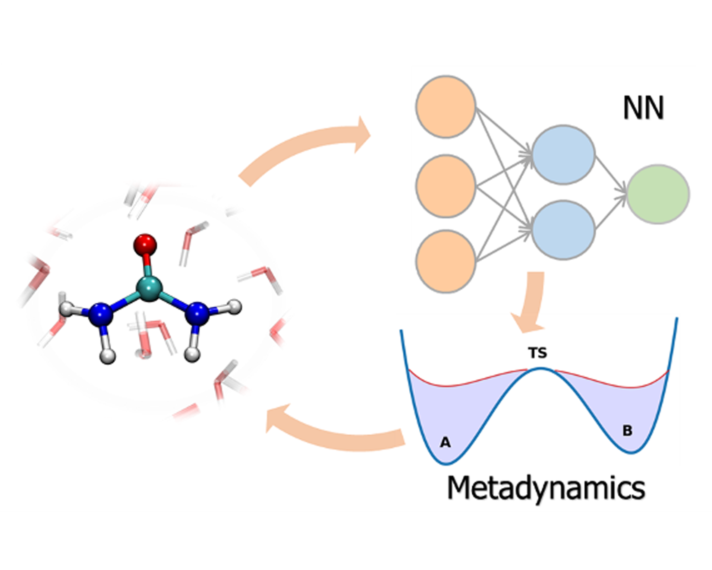
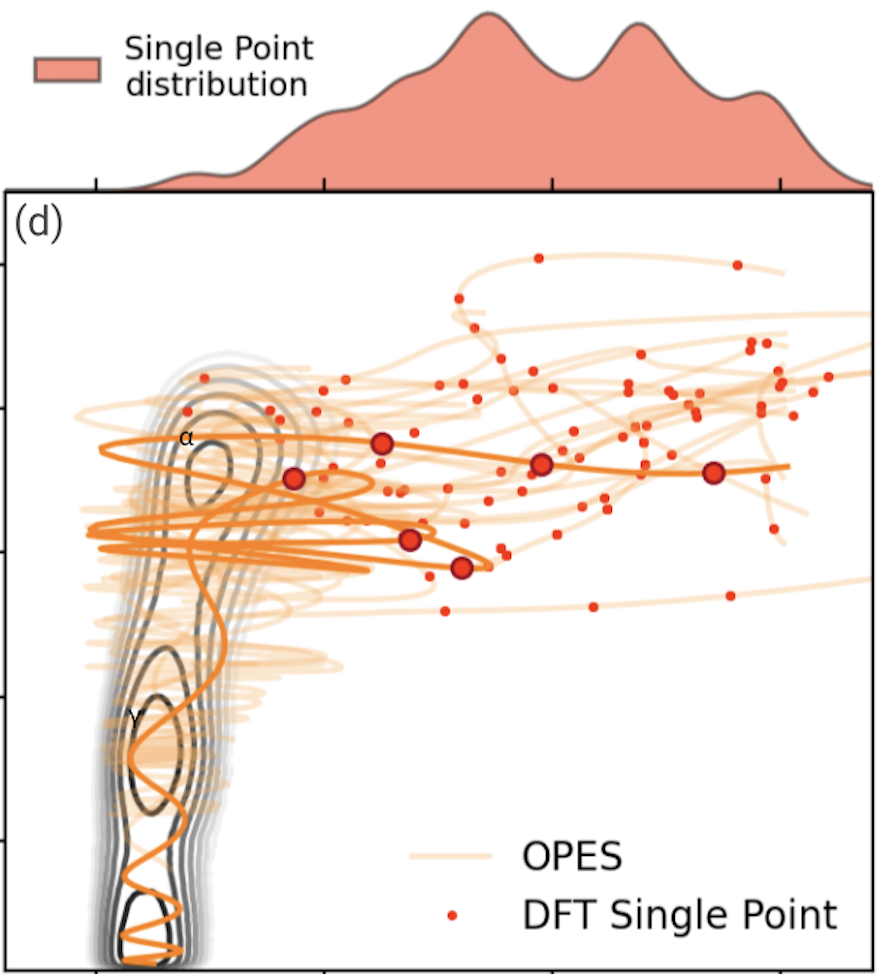
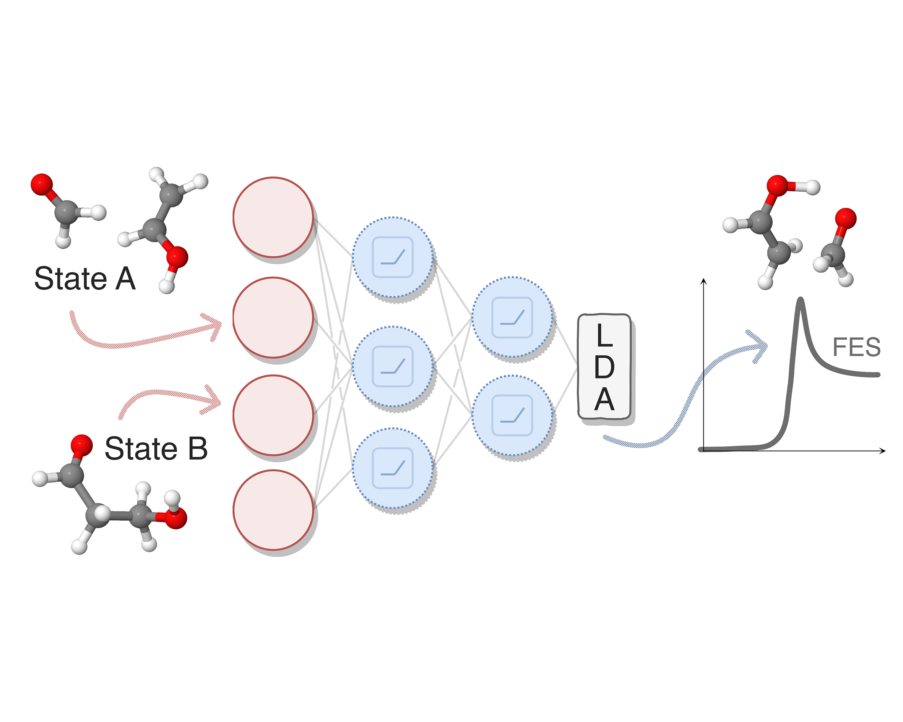
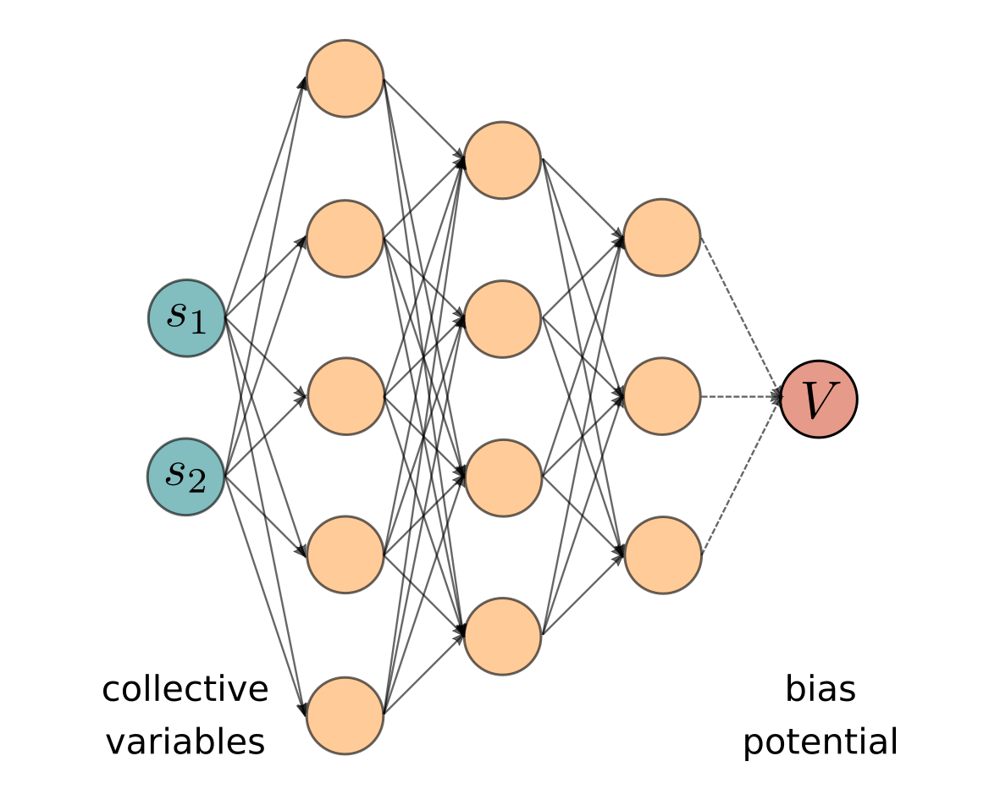
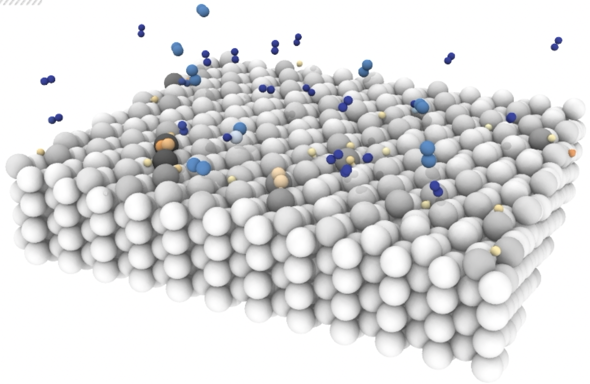

Research
-
ML POTENTIALS
Machine learning potentials for rare events
The construction of ML interatomic potentials for phase transitions and chemical reactions is challenging due to the difficulty of including all relevant configurations in the training set. By integrating enhanced sampling techniques into active learning strategies we are able obtain reliable and robust machine learning potentials. This enables ab initio-quality simulations of rare events which would otherwise be prohibitively expensive, ranging from crystallization [1] to phase diagrams [2] and from chemical reactions in solvent [3] to heterogeneous catalysis [4] and to phase-change materials [5].
[1] Physical Review Letters
(2018) , 121, 265701
[2] Nature Communications(2020) , 11, 2654
[3] Catalysis Today(2022)
[4] PNAS(2023)
[5] npj Computational Materials(2024)
Data-efficient machine learning potentials via active and transfer learning
To make the machine learning potentials routinely applicable and to model processes in more realistic conditions and with higher levels of electronic theory, it is essential to have data-efficient techniques. To this end, I have devised a framework that integrates advanced sampling with Gaussian processes and graph neural networks to construct reactive potentials in a highly efficient manner [1]. This data-efficient active learning (DEAL) scheme enables an ab initio-quality discovery of transition paths and ensures uniform accuracy along them, with a 20-fold increase in data-efficiency with respect to previous approaches. Furthermore, we are also developing transfer learning approaches to extract the representation learned from graph neural networks trained on large datasets and transfer them to new systems via kernel methods, enabling high (computational and data) efficiency [2].
-
ENHANCED SAMPLING
Data-driven identification of collective variables for enhanced sampling
A key challenge in enhanced sampling simulations is identifying collective variables (CVs) able to efficiently explore rare events. I developed data-driven approaches that automate this process using machine learning techniques. Notably, I proposed a method to build CVs from metastable states alone via neural networks optimized with Fisher’s discriminant [1] and a deep learning framework to extract slow modes from biased simulations, improving rare-event sampling in diverse applications [2]. Recent advances include a descriptor-free approach leveraging geometric graph neural networks for symmetry-invariant CVs [3] and a multitask approach that can learn CVs from transition path sampling simulations while simultaneously optimizing shooting efficiency [4]. All these techniques are implemented in mlcolvar, a Python library I developed which integrates machine learning-based CVs into enhanced sampling workflows [5].
[1] JPCL
(2020) , 11, 8
[2] PNAS(2021)
[3] JCTC(2024)
[4] JCTC(2024)
[5] JCP(2023)
Improve enhanced sampling methods with machine learning techniques
A popular strategy to overcome kinetic bottlenecks in atomistic simulations is to identify a number of key collective variables and to introduce an external bias potential that is able to accelerate sampling by favoring their fluctuations. I developed a variant of the variationally enhanced sampling method, in which the bias potential is represented as a neural network [1]. The bias is optimized on-the-fly with a reinforcement learning-like scheme, which minimizes the Kullback-Leibler divergence between the sampled and the target distribution. Using a neural network rather than a linear basis expansion allows to better represent represent complex free-energy surfaces and to handle several collective variables.
[1] Proceedings of the National Academy of Sciences
(2019) , 116 (36)
-
CATALYSIS
Unveiling the role of dynamics in catalytic processes
The role of atomic-scale dynamics in heterogeneous catalysis remains poorly understood, especially under operando conditions. In order to study how dynamic effects affect catalytic reactivity, I combined enhanced sampling with machine learning to learn not only the interatomic potentials but also other electronic properties such as the charge transfer, which is an important driving force behind many catalytic processes. We have shown that the dissociative chemisorption of nitrogen on iron, a key step in the Haber–Bosch process, is strongly affected by surface fluctuations at high temperatures, challenging the conventional static picture of catalytic sites [1]. Further studies revealed that adsorbed nitrogen species do not poison the catalyst but instead promote dynamic restructuring, which mitigates deactivation [2]. We also applied these methods to study the mechanism of ammonia decomposition [3], showing how competition with nitrogen migration within the material affects catalytic efficiency (\href[4], within the research network Ammoref. These findings highlight the crucial role of dynamics and open the way for more accurate and predictive models of industrial catalysis.
[1] PNAS
(2023)
[2] ACS Catalysis(2024)
[3] ACS Catalysis(2024)
[4] ACS Catalysis(2024)